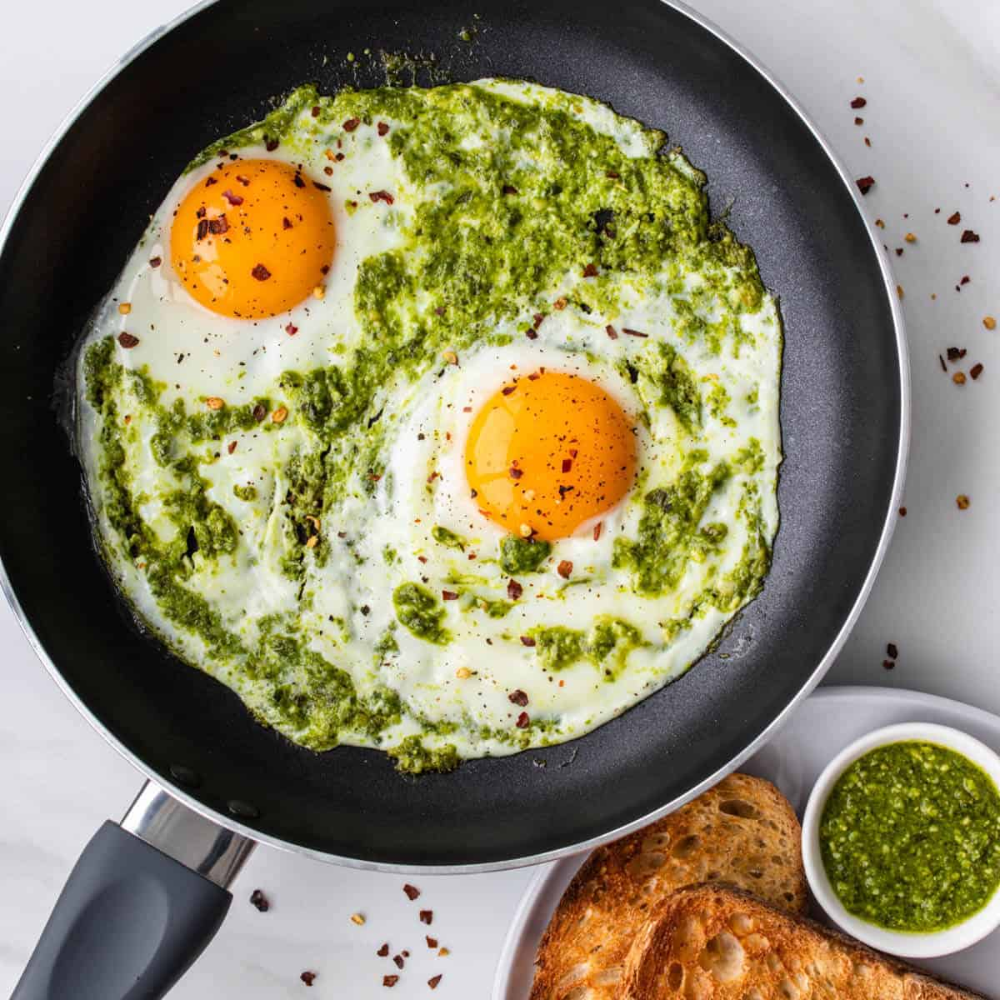

Pesto Eggs

Don't pass up on this seemingly too easy and simple tiktok recipe.
Because when you think about it, egges cooked in pesto makes so much sense.
All the herb-y goodness in that pesto sauce--that basil, parmesan, and even pine nuts
fry up into this cripsy and nutty flavor which integrates with the creamy egg--IT'S JUST TOO GOOD!
Alright, enough chit-chat! Let's get cooking!
Ingredients
- 1 slice bread, such as ciabatta or sourdough
- 1 tbsp. pesto, store-bought or homemade
- 1 large egg
- Kosher salt
- Freshly ground black pepper
Directions
- Using a cup or paring knife, cut an egg-sized hole in the center of your bread.
- In a small nonstick pan, heat pesto until lightly sizzling. Add bread and bread cut-out, then crack egg into the hole in the bread.
- Cook for 3 minutes, flip, and cook 1 minute more for an over-easy egg. Transfer to a plate and season with salt and pepper.